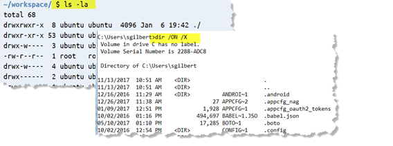

Command Line Arguments
Instead of prompting for input inside your program, you can supply additional information on the command line. These additional strings are called command line arguments.
Conside the make program. If you type this:
the make program receives "hello" as a command line argument. It is up to the program to decide what to do with it; make attempts to build a target named hello.
Strings starting with a hyphen (-) are customarily considered options (or switches) and other strings as file names. In Windows, such switches often start with a forward slash. In Linux, when you type ls -la and press ENTER, you will get a similar display as if you typed dir /ON /X on Windows.

 This course content is offered under a
CC
Attribution Non-Commercial license. Content in this course
can be considered under this license unless otherwise noted.
This course content is offered under a
CC
Attribution Non-Commercial license. Content in this course
can be considered under this license unless otherwise noted.